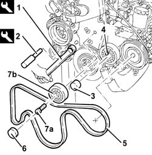
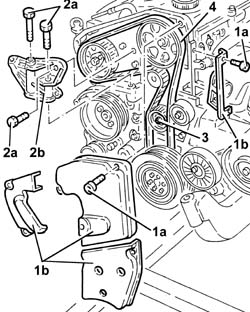
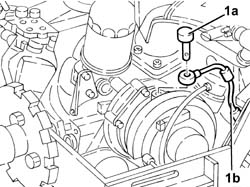
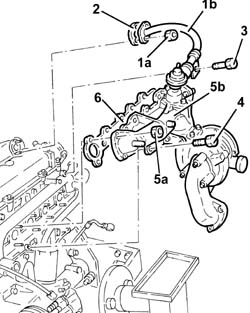
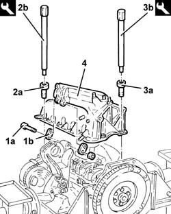

1004E10 Engine removed - Remove cylinder head and oil sump for inspection - Includes positioning on stand and Removal
- Path
- Procedures > 10 ENGINE > 1004 ENGINE AND POWER UNIT > 1004E ENGINE ASSEMBLY INSPECTION AND REPAIRS > 1004E10 Engine removed - Remove cylinder head and oil sump for inspection - Includes positioning on stand and Removal
- Kind
- repair procedure (removal / refitting; the operation number is the code)
- Applies to
- engines: 2.4 JTD 10V; all production periods
- Interactive page
- https://sloeber94.github.io/elrnDB-lThss/en/#/727070
Applies to: all engines; all production periods
See in Op. 1004D40
1. Adjust the automatic belt tensioner using the tool to slacken the single engine component drivebelt.
 | Description | Code | Function |
|---|---|---|---|
1 | Spanner | 1.860.966.000 | Automatic belt tensioner rotation for single components belt |
2. Insert the tool in the special opening to keep the automatic belt tensioner in the "fixed" position.
| Description | Code | Function |
|---|---|---|---|
2 | Lock | 1.870.645.000 | Automatic belt tensioner retainer for single components belt |
3. Release the cap for the single engine components belt tensioner.
4. Loosen the bolt for the single engine components belt tensioner.
5. Remove the single engine components drive belt.
6. Remove the engine components belt pulley cap.
7. Undo the bolt (7a) and remove the engine components single belt pulley (7b).

Applies to: all engines; all production periods
1. Undo the bolts (1a) and remove the timing drive belt guards (1b).
2. Undo the bolts (2a) and remove the power unit reaction rod bracket (2b).
3. Loosen the timing belt tensioner nut.
4. Release the timing drive belt.

Applies to: all engines; all production periods
1. Disconnect the fuel supply pipe from the filter from the pressure pump.
2. Disconnect the pressure pump side connector for the supply pipe from the pressure pump to the manifold using a suitable spanner.
3. Undo the connector (3a) using a suitable spanner and remove the supply pipe from the pressure pump to the manifold (3b).
4. Loosen the pressure pump support side bolts.
5. Loosen the pressure pump support front bolts.
6. Undo the bolts (6a) and remove the oil dipstick assembly (6b).

Applies to: all engines; all production periods
1. Undo the connector (1a) and disconnect the turbocharger oil inlet pipe (1b).

Applies to: all engines; all production periods
1. Undo the bolts (1a) and remove the turbocharger oil outlet pipe guard (1b).
2. Disconnect the turbocharger oil outlet pipe from the oil sump.

Applies to: all engines; all production periods
1. Undo the nuts (1a) and disconnect the exhaust gas recirculation pipe (1b).
2. Remove the seal.
3. Undo the pipe retainer bracket bolt.
4. Undo the bolt fixing the exhaust manifold bracket to the cylinder block/crankcase.
5. Undo the nuts (5a) and remove the exhaust manifold (5b) complete with turbocharger and E.G.R. valve.
6. Remove the seal.

Applies to: all engines; all production periods
1. Disconnect the oil vapour recovery pipe from the cylinder block/crankcase.
2. Disconnect the condensation oil recovery pipe from the crankcase sump.
3. Undo the nuts (3a) and remove the oil vapour separator (3b) complete with pipes.
4. Remove the bracket.
5. Disconnect the return pipe from the fuel filter to the return manifold.
6. Undo the nuts (6a) and remove the fuel filter assembly (6b).
7. Undo the bolts (7a) and remove the tappet cover (7b) complete with gasket.

Applies to: all engines; all production periods
1. Disconnect the water/oil heat exchanger coolant supply pipe from the thermostat.
2. Disconnect the water/oil heat exchanger coolant outlet pipe from the manifold.
3. Undo the bolts (3a) and remove the cylinder head assembly (3b).
4. Remove the cylinder head gasket.

Applies to: all engines; all production periods
- Rotate the engine through 180° on the overhaul stand.
1. Undo the bolts (1a) and remove the plates (1b) connecting the crankcase sump to the intermediate shaft support.
2. Undo the front and rear bolts (2a) fixing the crankcase sump using the tool (2b).
| Description | Code | Function |
|---|---|---|---|
2b | Spanner | 1.860.834.000 | Loosen/Tighten front and rear engine oil sump bolts |
3. Undo the side bolts (3a) fixing the crankcase sump using the tool (3b).
| Description | Code | Function |
|---|---|---|---|
1b | Spanner | 1.860.833.000 | Loosen/Tighten engine oil sump side bolts |
4. Remove the crankcase sump.
